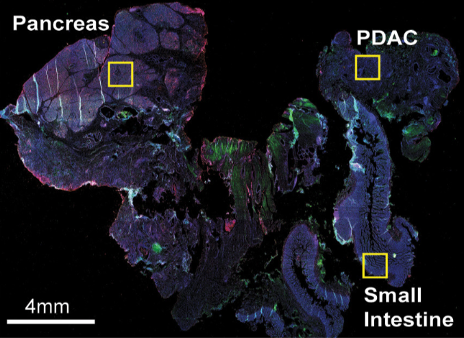

#> Warning: This tutorial was written with Giotto version 0.3.6.9038, your version
#> is 1.0.4.This is a more recent version and results should be reproducible
library(Giotto)
# 1. set working directory
results_folder = '/path/to/directory/'
# 2. set giotto python path
# set python path to your preferred python version path
# set python path to NULL if you want to automatically install (only the 1st time) and use the giotto miniconda environment
python_path = NULL
if(is.null(python_path)) {
installGiottoEnvironment()
}Dataset explanation
The CyCIF data to run this tutorial can be found here. Alternatively you can use the getSpatialDataset to automatically download this dataset like we do in this example.
We will re-analyze the PDAC data generated by tissue-CyCIF as explained in the paper by Lin et al.

Dataset download
# download data to working directory ####
# if wget is installed, set method = 'wget'
# if you run into authentication issues with wget, then add " extra = '--no-check-certificate' "
getSpatialDataset(dataset = 'cycif_PDAC', directory = results_folder, method = 'wget')Part 1: Giotto global instructions and preparations
# 1. (optional) set Giotto instructions
instrs = createGiottoInstructions(save_plot = TRUE,
show_plot = FALSE,
save_dir = results_folder)
# 2. create giotto object from provided paths ####
expr_path = paste0(results_folder, "cyCIF_PDAC_expression.txt.gz")
loc_path = paste0(results_folder, "cyCIF_PDAC_coord.txt")
meta_path = paste0(results_folder, "cyCIF_PDAC_annot.txt")
png_path = paste0(results_folder, "canvas.png")part 2: Create Giotto object & process data
# read in data information
# expression info
pdac_expression = readExprMatrix(expr_path, transpose = T)
# cell coordinate info
pdac_locations = data.table::fread(loc_path)
# metadata
pdac_metadata = data.table::fread(meta_path)
pdac_test <- createGiottoObject(raw_exprs = pdac_expression,
spatial_locs = pdac_locations,
instructions = instrs,
cell_metadata = pdac_metadata)
## normalize & adjust
pdac_test <- normalizeGiotto(gobject = pdac_test, scalefactor = 10000, verbose = T)
pdac_test <- addStatistics(gobject = pdac_test)
## visualize original annotations ##
spatPlot(gobject = pdac_test, point_size = 0.5, coord_fix_ratio = 1, cell_color = 'frame',
background_color = 'black', legend_symbol_size = 3,
save_param = list(save_name = '2_a_spatPlot'))
spatPlot(gobject = pdac_test, point_size = 0.3, coord_fix_ratio = 1,
cell_color = 'COL', background_color = 'black', legend_symbol_size = 3,
save_param = list(save_name = '2_b_spatPlot_column'))
spatPlot(gobject = pdac_test, point_size = 0.3, coord_fix_ratio = 1,
cell_color = 'ROW', background_color = 'black', legend_symbol_size = 3,
save_param = list(save_name = '2_c_spatPlot_row'))
## add external histology information
pdac_metadata = pDataDT(pdac_test)
pancreas_frames = c(1:6, 27:31, 15:19, 40:44)
PDAC_frames = c(23:26, 35:37, 51:52, 64:65, 77)
small_intestines_frames = c(49:50, 63, 75:76, 88:89, 100:103, 112:116, 125:129, 137:140)
# detailed histology
hist_info = ifelse(pdac_metadata$frame %in% pancreas_frames, 'pancr',
ifelse(pdac_metadata$frame %in% PDAC_frames, 'PDAC',
ifelse(pdac_metadata$frame %in% small_intestines_frames, 'small_intest', 'other')))
pdac_test = addCellMetadata(pdac_test, new_metadata = hist_info)
spatPlot(gobject = pdac_test, point_size = 0.3, coord_fix_ratio = 1, cell_color = 'hist_info',
background_color = 'black', legend_symbol_size = 3,
save_param = list(save_name = '2_d_spatPlot_hist'))
# coarse histology
hist_info2 = ifelse(pdac_metadata$frame %in% pancreas_frames, 'pancr',
ifelse(pdac_metadata$frame %in% small_intestines_frames, 'small_intest','PDAC'))
pdac_test = addCellMetadata(pdac_test, new_metadata = hist_info2)
spatPlot(gobject = pdac_test, point_size = 0.3, coord_fix_ratio = 1, cell_color = 'hist_info2',
background_color = 'black', legend_symbol_size = 3, point_border_stroke = 0.001,
save_param = list(save_name = '2_e_spatPlot_hist2'))
add and align image:
- read image with magick
- modify image optional (e.g. flip axis, negate, change background, …)
- test if image is aligned
# read
mg_img = magick::image_read(png_path)
# flip/flop (convert x and y axes)
mg_img = magick::image_flip(mg_img)
mg_img = magick::image_flop(mg_img)
# negate image
mg_img2 = magick::image_negate(mg_img)
## align image ##
# 1. create spatplot
mypl = spatPlot(gobject = pdac_test, point_size = 0.3, coord_fix_ratio = NULL, cell_color = 'hist_info2',
legend_symbol_size = 3, point_border_stroke = 0.001,
save_plot = F, return_plot = T)
# 2.create giotto image and make adjustments (xmax_adj, xmin_adj, ...)
hist_png = createGiottoImage(gobject = pdac_test, mg_object = mg_img2, name = 'image_hist',
xmax_adj = 5000, xmin_adj = 2500, ymax_adj = 1500, ymin_adj = 1500)
# 3. add giotto image to spatplot to check alignment
mypl_image = addGiottoImageToSpatPlot(mypl, hist_png)
mypl_image- add giotto image(s) to giotto object to call them within spat functions
## add images to Giotto object ##
image_list = list(hist_png)
pdac_test = addGiottoImage(gobject = pdac_test,
images = image_list)
showGiottoImageNames(pdac_test)part 3: dimension reduction
# PCA
pdac_test <- runPCA(gobject = pdac_test, expression_values = 'normalized',
scale_unit = T, center = F, method = 'factominer')
signPCA(pdac_test, scale_unit = T, scree_ylim = c(0, 3),
save_param = list(save_name = '3_a_signPCA'))
plotPCA(gobject = pdac_test, point_shape = 'no_border', point_size = 0.2,
save_param = list(save_name = '3_b_PCAplot'))
# UMAP
pdac_test <- runUMAP(pdac_test, dimensions_to_use = 1:14, n_components = 2, n_threads = 12)
plotUMAP(gobject = pdac_test, point_shape = 'no_border', point_size = 0.2,
save_param = list(save_name = '3_c_UMAP'))
part 4: cluster
## sNN network (default)
pdac_test <- createNearestNetwork(gobject = pdac_test, dimensions_to_use = 1:14, k = 20)
## 0.2 resolution
pdac_test <- doLeidenCluster(gobject = pdac_test, resolution = 0.2, n_iterations = 100, name = 'leiden')
# create customized color palette for leiden clustering results
pdac_metadata = pDataDT(pdac_test)
leiden_colors = Giotto:::getDistinctColors(length(unique(pdac_metadata$leiden)))
names(leiden_colors) = unique(pdac_metadata$leiden)
color_3 = leiden_colors['3'];color_10 = leiden_colors['10']
leiden_colors['3'] = color_10; leiden_colors['10'] = color_3
plotUMAP(gobject = pdac_test, cell_color = 'leiden', point_shape = 'no_border',
point_size = 0.2, cell_color_code = leiden_colors,
save_param = list(save_name = '4_a_UMAP'))
plotUMAP(gobject = pdac_test, cell_color = 'hist_info',point_shape = 'no_border', point_size = 0.2,
save_param = list(save_name = '4_b_UMAP'))
spatPlot(gobject = pdac_test, cell_color = 'leiden', point_shape = 'no_border', point_size = 0.2,
cell_color_code = leiden_colors, coord_fix_ratio = 1,
save_param = list(save_name = '4_c_spatplot'))Add background image:
showGiottoImageNames(pdac_test)
spatPlot(gobject = pdac_test, show_image = T, image_name = 'image_hist',
cell_color = 'leiden',
point_shape = 'no_border', point_size = 0.2, point_alpha = 0.7,
cell_color_code = leiden_colors, coord_fix_ratio = 1,
save_param = list(save_name = '4_d_spatPlot'))part 5: visualize spatial and expression space
spatDimPlot2D(gobject = pdac_test, cell_color = 'leiden',
spat_point_shape = 'no_border', spat_point_size = 0.2,
dim_point_shape = 'no_border', dim_point_size = 0.2,
cell_color_code = leiden_colors,
save_param = list(save_name = '5_a_spatdimplot'))
spatDimPlot2D(gobject = pdac_test, cell_color = 'leiden',
spat_point_shape = 'border',
spat_point_size = 0.2, spat_point_border_stroke = 0.01,
dim_point_shape = 'border', dim_point_size = 0.2,
dim_point_border_stroke = 0.01, cell_color_code = leiden_colors,
save_param = list(save_name = '5_b_spatdimplot'))
spatDimPlot2D(gobject = pdac_test, cell_color = 'hist_info2',
spat_point_shape = 'border', spat_point_size = 0.2,
spat_point_border_stroke = 0.01, dim_point_shape = 'border',
dim_point_size = 0.2, dim_point_border_stroke = 0.01,
save_param = list(save_name = '5_c_spatdimplot'))
part 6: cell type marker gene detection
# resolution 0.2
cluster_column = 'leiden'
# gini
markers_gini = findMarkers_one_vs_all(gobject = pdac_test,
method = "gini",
expression_values = "scaled",
cluster_column = cluster_column,
min_genes = 5)
markergenes_gini = unique(markers_gini[, head(.SD, 5), by = "cluster"][["genes"]])
plotMetaDataHeatmap(pdac_test, expression_values = "norm",
metadata_cols = c(cluster_column),
selected_genes = markergenes_gini,
custom_cluster_order = c(1, 10, 3, 12, 8, 2, 9, 6, 11, 13, 4, 5, 7),
y_text_size = 8, show_values = 'zscores_rescaled',
save_param = list(save_name = '6_a_metaheatmap'))
topgenes_gini = markers_gini[, head(.SD, 1), by = 'cluster']$genes
violinPlot(pdac_test, genes = unique(topgenes_gini), cluster_column = cluster_column,
strip_text = 8, strip_position = 'right',
save_param = c(save_name = '6_b_violinplot_gini', base_width = 5, base_height = 10))
part 7: cell type annotation
Metadata heatmap
Inspect the potential cell type markers
## all genes heatmap
plotMetaDataHeatmap(pdac_test, expression_values = "norm", metadata_cols = 'leiden',
custom_cluster_order = c(1, 10, 3, 12, 8, 2, 9, 6, 11, 13, 4, 5, 7),
y_text_size = 8, show_values = 'zscores_rescaled',
save_param = list(save_name = '7_a_metaheatmap'))
Inspect the potential cell type markers stratified by tissue location
plotMetaDataHeatmap(pdac_test, expression_values = "norm", metadata_cols = c('leiden','hist_info2'),
first_meta_col = 'leiden', second_meta_col = 'hist_info2',
y_text_size = 8, show_values = 'zscores_rescaled',
save_param = list(save_name = '7_b_metaheatmap'))Spatial subsets
Inspect subsets of the data based on tissue location
spatPlot(pdac_test, cell_color = 'leiden', cell_color_code = leiden_colors,
point_shape = 'no_border', point_size = 0.75, group_by = 'hist_info2',
save_param = list(save_name = '7_c_spatplot'))
spatPlot(pdac_test, cell_color = 'leiden', cell_color_code = leiden_colors,
point_shape = 'no_border', point_size = 0.3,
group_by = 'hist_info2', group_by_subset = c('pancr'), cow_n_col = 1,
save_param = list(save_name = '7_d_spatplot'))
spatPlot(pdac_test, cell_color = 'leiden', cell_color_code = leiden_colors,
point_shape = 'no_border', point_size = 0.3,
group_by = 'hist_info2', group_by_subset = c('PDAC'), cow_n_col = 1,
save_param = list(save_name = '7_e_spatplot'))
spatPlot(pdac_test, cell_color = 'leiden', cell_color_code = leiden_colors,
point_shape = 'no_border', point_size = 0.3,
group_by = 'hist_info2', group_by_subset = c('small_intest'), cow_n_col = 1,
save_param = list(save_name = '7_f_spatplot'))
Spatial distribution of clusters
Visually inspect the spatial distribution of different clusters
# spatial enrichment of groups
for(group in unique(pDataDT(pdac_test)$leiden)) {
spatPlot(pdac_test, cell_color = 'leiden', point_shape = 'no_border',
point_size = 0.3, other_point_size = 0.1,
select_cell_groups = group, cell_color_code = 'red',
save_param = list(save_name = paste0('7_g_spatplot_', group)))
}Here we show a subset of the resulting plots:


Annotate clusters based on spatial position and dominant expression patterns
cell_metadata = pDataDT(pdac_test)
cluster_data = cell_metadata[, .N, by = c('leiden', 'hist_info2')]
cluster_data[, fraction:= round(N/sum(N), 2), by = c('leiden')]
data.table::setorder(cluster_data, leiden, hist_info2, fraction)
# final annotation
names = 1:13
location = c('pancr', 'intest', 'general', 'intest', 'pancr',
'intest', 'pancr', 'canc', 'general', 'pancr',
'general', 'pancr', 'intest')
feats = c('epithelial_I', 'fibroblast_VEGFR+', 'stroma_HER2+_pERK+', 'epithelial_lining_p21+', 'epithelial_keratin',
'epithelial_prolif', 'epithelial_actin++', 'immune_PD-L1+', 'stromal_actin-', 'epithelial_tx_active',
'epithelial_MET+_EGFR+', 'immune_CD45+', 'epithelial_pAKT')
annot_dt = data.table::data.table('names' = names, 'location' = location, 'feats' = feats)
annot_dt[, annotname := paste0(location,'_',feats)]
cell_annot = annot_dt$annotname;names(cell_annot) = annot_dt$names
pdac_test = annotateGiotto(pdac_test, annotation_vector = cell_annot, cluster_column = 'leiden')
# specify colors
leiden_colors
leiden_names = annot_dt$annotname; names(leiden_names) = annot_dt$names
cell_annot_colors = leiden_colors
names(cell_annot_colors) = leiden_names[names(leiden_colors)]
# covisual
spatDimPlot(gobject = pdac_test, cell_color = 'cell_types', cell_color_code = cell_annot_colors,
spat_point_shape = 'border', spat_point_size = 0.2, spat_point_border_stroke = 0.01,
dim_point_shape = 'border', dim_point_size = 0.2, dim_point_border_stroke = 0.01,
dim_show_center_label = F, spat_show_legend = T, dim_show_legend = T, legend_symbol_size = 3,
save_param = list(save_name = '7_h_spatdimplot'))
# spatial only
spatPlot(gobject = pdac_test, cell_color = 'cell_types', point_shape = 'no_border', point_size = 0.2,
coord_fix_ratio = 1, show_legend = T, cell_color_code = cell_annot_colors, background_color = 'black',
save_param = list(save_name = '7_i_spatplot'))
8. spatial grid
pdac_test <- createSpatialGrid(gobject = pdac_test,
sdimx_stepsize = 150,
sdimy_stepsize = 150,
minimum_padding = 0)
spatPlot(pdac_test,
cell_color = 'leiden',
show_grid = T, point_size = 0.75, point_shape = 'no_border',
grid_color = 'red', spatial_grid_name = 'spatial_grid',
save_param = list(save_name = '8_a_spatplot'))
9. spatial network
pdac_test <- createSpatialNetwork(gobject = pdac_test, minimum_k = 2)12. cell-cell preferential proximity
## calculate frequently seen proximities
cell_proximities = cellProximityEnrichment(gobject = pdac_test,
cluster_column = 'cell_types',
spatial_network_name = 'Delaunay_network',
number_of_simulations = 200)
## barplot
cellProximityBarplot(gobject = pdac_test, CPscore = cell_proximities, min_orig_ints = 5, min_sim_ints = 5,
save_param = list(save_name = '12_a_barplot'))
## network
cellProximityNetwork(gobject = pdac_test, CPscore = cell_proximities,
remove_self_edges = T, only_show_enrichment_edges = F,
save_param = list(save_name = '12_b_network'))
## visualization
spec_interaction = "1--5"
cellProximitySpatPlot2D(gobject = pdac_test, point_select_border_stroke = 0,
interaction_name = spec_interaction,
cluster_column = 'leiden', show_network = T,
cell_color = 'leiden', coord_fix_ratio = NULL,
point_size_select = 0.3, point_size_other = 0.1,
save_param = list(save_name = '12_c_proxspatplot'))part X: analyses for paper
Heatmap for cell type annotation:
cell_type_order_pdac = c("pancr_epithelial_actin++", "pancr_epithelial_I",
"intest_epithelial_lining_p21+", "pancr_epithelial_keratin",
"intest_epithelial_prolif" ,"general_epithelial_MET+_EGFR+",
"intest_epithelial_pAKT", "pancr_epithelial_tx_active",
"canc_immune_PD-L1+","general_stromal_actin-",
"pancr_immune_CD45+", "intest_fibroblast_VEGFR+",
"general_stroma_HER2+_pERK+")
plotMetaDataHeatmap(pdac_test, expression_values = "scaled", metadata_cols = c('cell_types'),
custom_cluster_order = cell_type_order_pdac,
y_text_size = 8, show_values = 'zscores_rescaled',
save_param = list(save_name = 'xx_a_metaheatmap'))
Pancreas
Highlight region in pancreas:
## pancreas region ##
my_pancreas_Ids = pdac_metadata[frame == 17][['cell_ID']]
my_pancreas_giotto = subsetGiotto(pdac_test, cell_ids = my_pancreas_Ids)
spatPlot(my_pancreas_giotto, cell_color = 'leiden', point_shape = 'no_border',
point_size = 1, cell_color_code = leiden_colors,
save_param = list(save_name = 'xx_b_spatplot'))
spatGenePlot(my_pancreas_giotto, expression_values = 'scaled', point_border_stroke = 0.01,
genes = c('E_Cadherin','Catenin', 'Vimentin', 'VEGFR'), point_size = 1,
save_param = list(save_name = 'xx_c_spatgeneplot'))
plotUMAP(my_pancreas_giotto, cell_color = 'leiden', point_shape = 'no_border', point_size = 0.5,
cell_color_code = leiden_colors, show_center_label = F,
save_param = list(save_name = 'xx_d_umap'))
dimGenePlot(my_pancreas_giotto, expression_values = 'scaled', point_border_stroke = 0.01,
genes = c('E_Cadherin','Catenin', 'Vimentin', 'VEGFR'), point_size = 1,
save_param = list(save_name = 'xx_e_dimGeneplot'))
Small intestines
Highlight region in small intestines (same as in original paper):
## intestine region ##
my_intest_Ids = pdac_metadata[frame == 115][['cell_ID']]
my_intest_giotto = subsetGiotto(pdac_test, cell_ids = my_intest_Ids)
spatPlot(my_intest_giotto, cell_color = 'leiden', point_shape = 'no_border',
point_size = 1, cell_color_code = leiden_colors,
save_param = list(save_name = 'xx_f_spatplot'))
spatGenePlot(my_intest_giotto, expression_values = 'scaled', point_border_stroke = 0.01,
genes = c('PCNA','Catenin', 'Ki67', 'pERK'), point_size = 1,
save_param = list(save_name = 'xx_g_spatGeneplot'))
plotUMAP(my_intest_giotto, cell_color = 'leiden', point_shape = 'no_border', point_size = 0.5,
cell_color_code = leiden_colors, show_center_label = F,
save_param = list(save_name = 'xx_h_umap'))
dimGenePlot(my_intest_giotto, expression_values = 'scaled', point_border_stroke = 0.01,
genes = c('PCNA','Catenin', 'Ki67', 'pERK'), point_size = 1,
save_param = list(save_name = 'xx_i_dimGeneplot'))